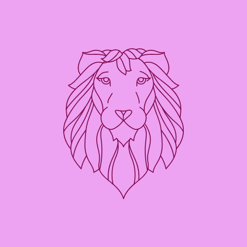
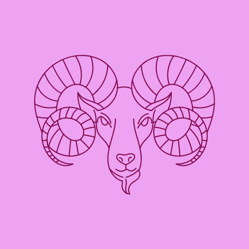

Signos de fuego
Los cuatro elementos son los componentes más básicos de la astrología y representan las energías más primitivas. Presentes en la mayoría de las culturas, se los asocia al ser humano en sus distintos aspectos: el Fuego simboliza el cuerpo vital o etérico, la Tierra al cuerpo físico, el Agua al cuerpo emocional o “astral” y, finalmente, el Aire al cuerpo mental.
Los pasionales: Las personas fuego se caracterizan por ser fuente de luz. Siempre están activos y vitales. Aportan pasión y, además, alegría. Asimismo, tienen un estilo histriónico lo cual llama la atención de las demás personas. También son creativos, expresivos, sinceros y son capaces de mostrar el camino correcto.

Leo (27 Agosto-22 Septiembre)
el signo más dominante del zodíaco. Creativo y abierto, tiene ambición, valor, fuerza, autonomía y total seguridad en sí mismo: sabe dónde quiere llegar y nada ni nadie podrá evitarlo. En contrapartida, sus puntos negativos pueden ser tantos como las virtudes que tiene: vanidad, egocentrismo, arrogancia, impostura y un genio de mil demonios, entre otros defectos.Los Leones son entusiastas, creativos y muchas veces comprensivos con las circunstancias de los demás; adoran los lujos y la aventura; correr riesgos les motiva. También se caracterizan por tener un elevado concepto de todo, especialmente, de sí mismos, por eso huyen de la vulgaridad.

Aries (21 Marzo-19 Abril)
es el primer signo del zodíaco, precisamente por eso, simboliza el inicio, la creación. Se caracteriza por ser una persona rebosante de energía y entusiasmo; avanzada y aventurera, adora la libertad, los retos y las nuevas ideas.son de acción rápida y confían en su poder, por eso no pierden el tiempo pensando en problemas, de hecho, su manera de resolverlos es la acción. Un aspecto negativo de esta actitud, a veces, es la impulsividad y falta de paciencia, además de arriesgarse demasiado. Tampoco soportan equivocarse ni el fracaso.